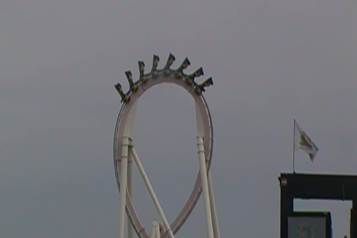
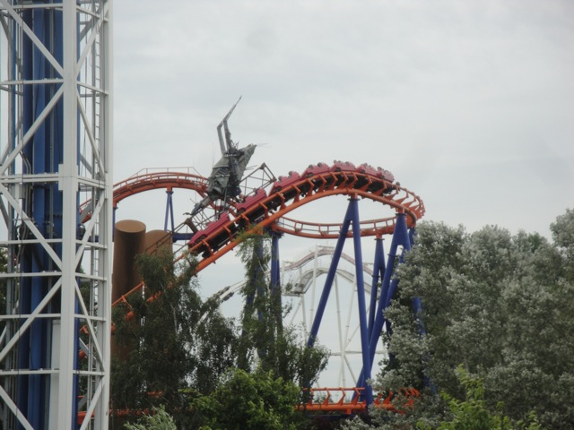
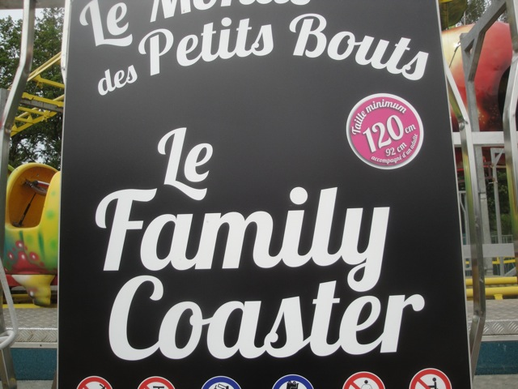

| |
Walygator Parc Review

Walygator Parc is a small little French park that doesn't really get much attention, but it's a fun little park. But yeah. This is a local park for the most part. However, there is one reason that this park would stand out to a coaster enthusiast. Monster. Yep, this park has a clone of Raptor from Cedar Point, which is definetly one of the better B&M Inverts. And yeah, this is an amazing ride. So, I know this may sound weird, but the best roller coaster in all of France is in this park. It sounds weird, considering that Parc Asterix is the main big amusment park in France and usually the park that people will think of when they think of Amusement Parks in France with big roller coasters that aren't Disney, the only park that'll come up is Parc Asterix and they'll cite Tonnerre de Zeus and OzIris as the best roller coasters of France. But nope. The best roller coaster in France is located in a small little park that isn't very well known in the middle of nowhere, rural France. It may sound weird, but it's true. And yeah, the rest of the park is pretty meh. The other roller coasters range from meh clones to horrible coasters. And the rest of the park is...all right. It's a fun little park. It's worth a couple hours of your time, you'll get some credits at the park, and of course, Monster is a damn fun ride, and really. Any chance to ride a Raptor clone is a good enough reason to stop by me. =)
Rollercoasters
There is a link to a review of all the Rollercoasters at Walygator Parc.
Top Coasters
Monster Review

Mediocre Coasters
Space Comet Review

Sh*tty Coasters
Anaconda Review

Kiddy Coasters
Family Coaster Review

Flat Rides
Here are the reviews of all the Flat Rides at Walygator Parc. And yeah. This park does not have a good flat ride collection. The two main flat rides, the Space Shot and the Topple Tower were both closed when I visited the park. And yeah, I didn't notice any other flat rides. Besides, Space Shots are everywhere and Topple Towers, while nearly exctinct (the only one operating is at Djurs Sommerland, so go there if you want to ride one), is a mediocre ride. And I don't think this one is ever going to run again. Hell, I'm not even sure if it's still standing at all!!! From what I saw, the rest of the flat ride collection is just your standard collection of tea cups, carousels, chairswings, monsters, and other generic flat rides.
 Don't get your hopes up. If this Topple Tower hasn't already been bulldozed, then it's certainly SBNO.
Don't get your hopes up. If this Topple Tower hasn't already been bulldozed, then it's certainly SBNO.
Dark Rides
Walygator Parc isn't exactly the place you'd come to expect for good dark rides since it's a small little park in the middle of rural France. But there is one ride here that definetly...is fun. The Terror House. Yeah, it's one of those Year Round Horror Mazes that most parks only have for their Haunt Events. These things are much more popular in Europe than in the U.S. And it's fun, especially when teenage French Girls are freaking out in front of you. I always enjoy that. In a weird way, this is the 2nd best ride in the park after Monster. So yeah. Definetly give the Terror House a try.
 It may not be terrifying, but I had fun.
It may not be terrifying, but I had fun.
Water Rides
I did not ride any of the water rides at Walygator Parc. From what I could tell, it's just a rapids ride that doesn't look like anything special.
Dining
I did not eat at Walygator Parc, though I did hear from Cliff that they have really good Doner Kebabs.
Theming and Other Attractions
Here are the reviews of all the other stuff at Walygator Parc. And as a small park, yeah. There's really not much here. There's essentially no theming at all. There's a little bit scattered here and there, but it's ultimately nothing. It's kind of like RCT where you'd scatter random theming, but nothing looks real. That's the best way to describe the theming here. As for other stuff to do, there's nothing unless you refuse to count the Terror House as a dark ride. So yeah, this place is all rides, not anything else.
 I'm still not entirely convinced that that's just theming. =)
I'm still not entirely convinced that that's just theming. =)
In Conclusion
Walygator Parc is a fun little local park that a lot of coaster enthusiasts aren't that familiar with, but is fun for an hour or two. It is mostly a credit whoring stop, outside of the fact that this small rural park actually contains the best roller coaster in all of France. True, France doesn't have as many major roller coasters as similarly sized European Countries for some reason. But hey, this park has a really great roller coaster. And yeah, it may be just a credit whoring stop outside of that fact, but it's a fun little credit whoring stop in that regard.
Enthusiast FAQs.
*Are there kiddy coaster restrictions? - Nope. You can ride the kiddy coaster here.

Tips
*I'm not sure of the park's POV policy since I just never tested it or tried.
*Get all the credits.
*Ride Monster multiple times.
*Have Fun!!!!
Theme Park Category:
Small Park
Location
Maizières-lès-Metz, Lorraine, France
Last Day Visited
June 24, 2012
Video
I do not have enough footage for a Walygator Parc video. Maybe with more visits, I could pull off a small one, but it's not likely.
Complete Update List
2012
TPR's Mega Europe Trip
Here's a link to the parks website.
Home
|